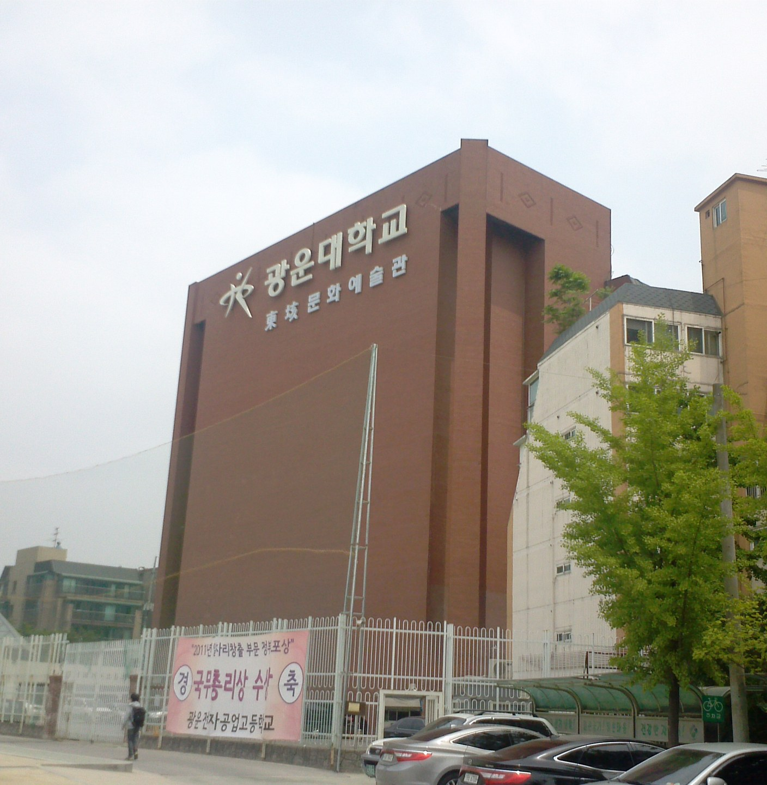
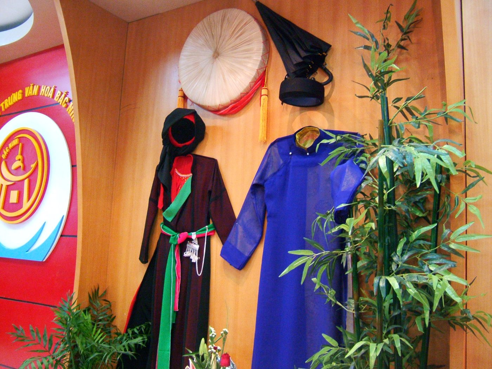
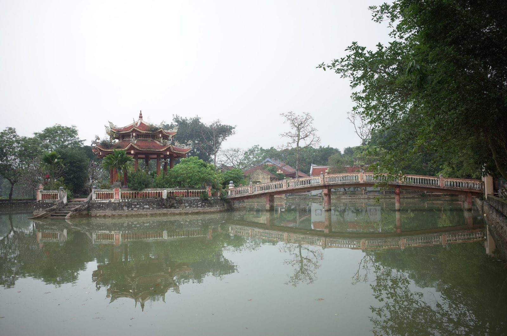

남성 소리꾼
liền anh
리엔아인
다른 마을 liền chị와 짝을 이루어 같은 가락에 다른 가사로 화답한다.



UNESCO 인류무형문화유산 · 2009
베트남 북부 낀박 지역, 두 마을의 남녀가 목소리로만 주고받는 민요
민요
베트남 북부 출신으로서, 어릴 때부터 들어온 꽌호를 한국어로 소개하게 되어 영광입니다.
레깟뜨엉 Lê Cát Tường
사진: © Chrisvomberg / Wikimedia Commons / CC BY-SA 3.0
01소개와 등재
2009년 9월 30일, 아부다비에서 열린 제4차(4.COM) 유네스코 무형문화유산보호협약 정부간위원회에서 결정번호 4.COM 13.76으로 Quan họ Bắc Ninh 민요를 인류무형문화유산 대표목록에 등재했다.
등재 결정
9월 30일 · 아부다비 제4차 정부간위원회
결정번호4.COM 13.76
공식 명칭
유네스코 인류무형문화유산 대표목록
하노이 오페라하우스 — Ca trù와 동시 거행
by vi:User:Viethavvh / Wikimedia Commons / CC BY-SA 3.0
출처: UNESCO ICH, Cục Di sản văn hóa (dsvh.gov.vn) → 출처 목록
02지역
Quan họ는 박닌성과 박장성에 걸친 옛 낀박 지역에서 전승되어 온 민요다.
49
Quan họ 마을옛 낀박 지역 · 박닌성과 박장성
44곳 박닌성 (Bắc Ninh) · 박닌시·옌퐁현 중심
5곳 박장성 (Bắc Giang) · 비엣옌현
지도 읽는 법 — 마커는 개별 마을이 아니라 현(縣)·시 단위 중심부의 근사 위치이며, 점선 영역은 옛 낀박 지역 중 Quan họ 전승 권역을 개략적으로 표시한 것으로 실제 역사 경계가 아니다. 행정구역 명칭은 등재 당시(2009) 기준이다. 2025년 행정구역 개편으로 박장성은 박닌성에 통합되었고 현 단위는 폐지되었다.
출처: Cục Di sản văn hóa (dsvh.gov.vn) · 지도 © OpenStreetMap → 출처 목록
03예술과 공연
Quan họ는 남녀가 짝을 지어 주고받는 반주 없는 육성 민요다.
남성 소리꾼
리엔아인
다른 마을 liền chị와 짝을 이루어 같은 가락에 다른 가사로 화답한다.
여성 소리꾼
리엔찌
다른 마을 liền anh과 짝을 이루어 같은 가락에 다른 가사로 화답한다.
213개
가락(làn điệu)
약400여 곡
전해지는 가사
카드를 탭하면 베트남어 발음이 들린다. 번역 표기는 연구자마다 다를 수 있다.
출처: UNESCO ICH, Cục Di sản văn hóa (dsvh.gov.vn) → 출처 목록
04예술과 공연
Quan họ는 밤의 hát canh부터 매년 음력 1월 13일 Hội Lim 축제까지 다양한 공간에서 불린다.
실내
밤에 소리꾼의 집에서 여는 실내 공연
사당
사당(đình)에서 여는 제례 공연
마을 축제
마을 축제에서 여는 공연
뱃노래
배 위에서 부르는 뱃노래
음력
1월 13일
출처: 정책생활(vnanet.vn), 위키백과 → 출처 목록
05정체성과 계승
liền chị는 겹겹의 áo mớ ba mớ bảy를, liền anh은 검은 áo the를 갖춘다.
여성 · liền chị

by vi:User:Viethavvh via Wikimedia Commons — CC BY-SA 3.0
남성 · liền anh
출처: dulichvietnam.com.vn → 출처 목록
06정체성과 계승
Quan họ 마을 간의 kết chạ(결의 관계) 풍습은 공동체를 이어주는 오랜 전통이다.
한 마을의
bọn Quan họ
kết chạ 결의
다른 마을의
bọn Quan họ
결연한 두 마을·그룹의 남녀는 서로 혼인할 수 없다. 형제 마을로 맺어졌기 때문이다.
손님과 주인 그룹 간 예의를 중시하며, 노래에 앞서 대접으로 시작한다.
출처: Báo CAND (cand.vn) → 출처 목록
07정체성과 계승
박닌성은 교육 도입부터 예능인 지원까지 Quan họ 보전에 적극 투자하고 있다.
2011학년도~
4개 전 교육과정에 Quan họ 정규 도입
11+6곳
nhà chứa 11곳 · 공연장 6곳 복원
전국 유일 매월 지원금 제도
221명
예능인 표창 (2009~2024)
인민예술가 9명 포함
600여 개
동호회 활동 중 · 회원 약 1만 명
연 3,000만동
원조 마을(44곳) 지원금
전승 마을·동호회는 연 2,000만동
출처: VietnamPlus, Thương hiệu & Công luận → 출처 목록
08한국과의 비교
같은 해, 같은 회의에서 인류무형문화유산이 된 두 노래.
2009년 아부다비 4.COM
화답 ↔ 메기고 받기
호이 림 ↔ 한가위
출처: UNESCO ICH · 국가유산청 (heritage.go.kr) → 출처 목록
09함께 풀어요
발표를 잘 들으셨나요? 7문제를 풀고 나의 Quan họ 등급을 확인해 보세요.
10맺음말
낀박 사람들의 정과 예절이 담긴 살아있는 문화유산이며, 유네스코 등재는 끝이 아닌 지속적 계승의 시작이다. 다음 세대에 전할 자랑스러운 베트남의 목소리다.
휴대전화로 보기이 페이지 공유하기
tuong06.github.io/quan-ho들어 주셔서 감사합니다.
질문이 있으시면 편하게 말씀해 주세요.
Cảm ơn các bạn đã lắng nghe!
© Nguoivietbao / Wikimedia Commons / CC BY-SA 4.0
각 섹션의 출처는 원본 발표 자료(슬라이드)에 표기된 출처를 그대로 따랐다.
UNESCO ICH (ich.unesco.org) · dsvh.gov.vn
배경 사진(순환): © Chrisvomberg / Wikimedia Commons / CC BY-SA 3.0 · by vi:User:Viethavvh / Wikimedia Commons / CC BY-SA 3.0 · © Nguoivietbao / Wikimedia Commons / CC BY-SA 4.0
UNESCO ICH (ich.unesco.org) · Cục Di sản văn hóa (dsvh.gov.vn)
사진: by vi:User:Viethavvh / Wikimedia Commons / CC BY-SA 3.0
Cục Di sản văn hóa (dsvh.gov.vn)
지도 타일: © OpenStreetMap contributors · 지도 라이브러리 Leaflet (BSD-2). 마커와 권역은 근사·개략 표시.
UNESCO ICH (ich.unesco.org) · Cục Di sản văn hóa (dsvh.gov.vn)
정책생활 (vnanet.vn) · 위키백과
사진: by vi:User:Viethavvh via Wikimedia Commons — CC BY-SA 3.0
VietnamPlus · Thương hiệu & Công luận
UNESCO ICH (ich.unesco.org) · dsvh.gov.vn
사진: © Nguoivietbao / Wikimedia Commons / CC BY-SA 4.0